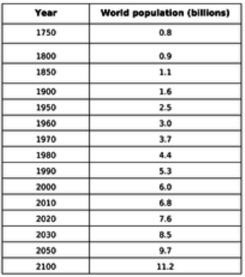

Proof of Impact

Jtranah. Human Population Growth - Plot Graph of U.N. Data and Answer Questions.
TES Resources, www.tes.com/teaching-resource/human-population-growth-plot-graph-of-u-n-data-and-answer-questions-11933088.
Science proves that the human population is increasing. The current annual increase is estimated to be about 82 million people. Between the year 1959 and 1999 the human population doubled itself. It went from 3 billion to 6 billion, currently it is at 7.5 billion. While it has not increased as much as it has in the past, it is important to be prepared for another unexpected population growth. By 2050 it is estimated that the Earth will house 9,735,033,990. It is important that we protect our Earth and our people before we run out of natural resources and hope for survival.
Current World Population.
Worldometers, www.worldometers.info/world-population/.